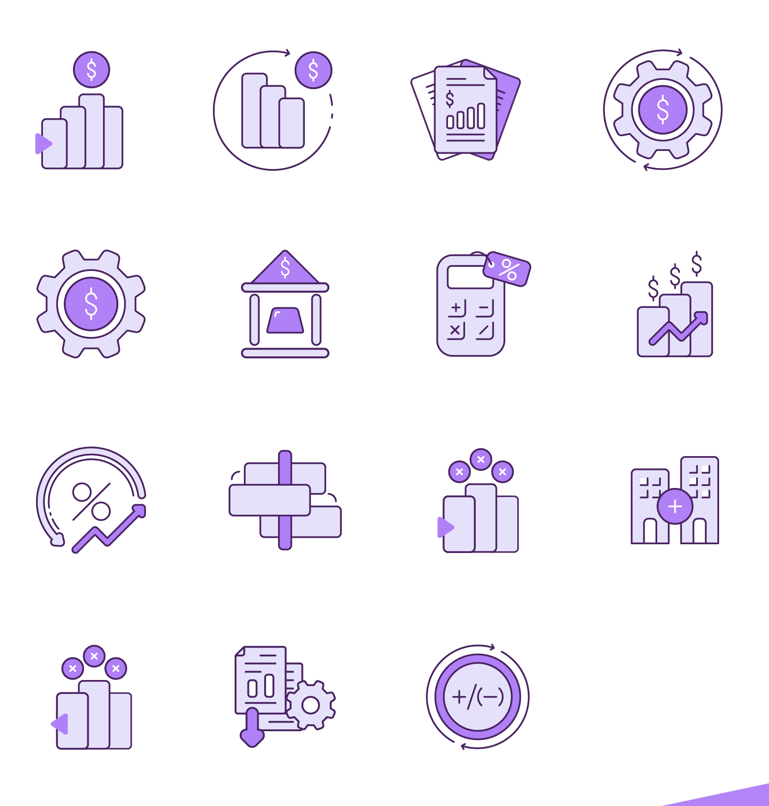
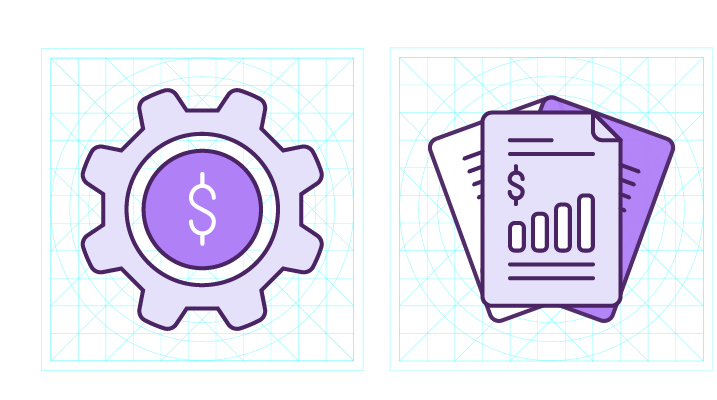
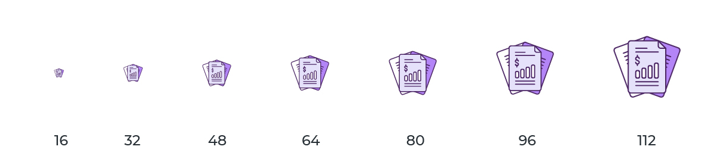
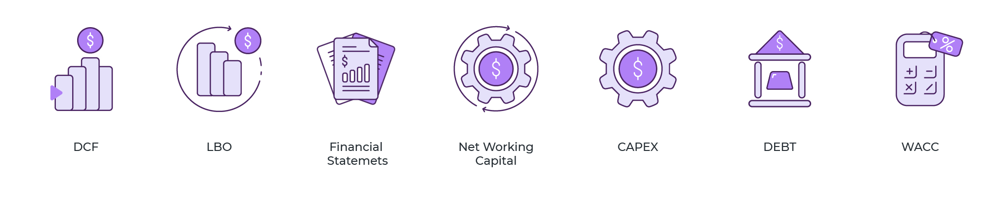
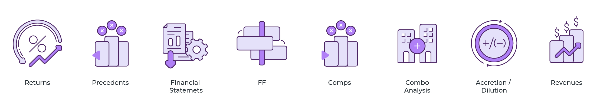
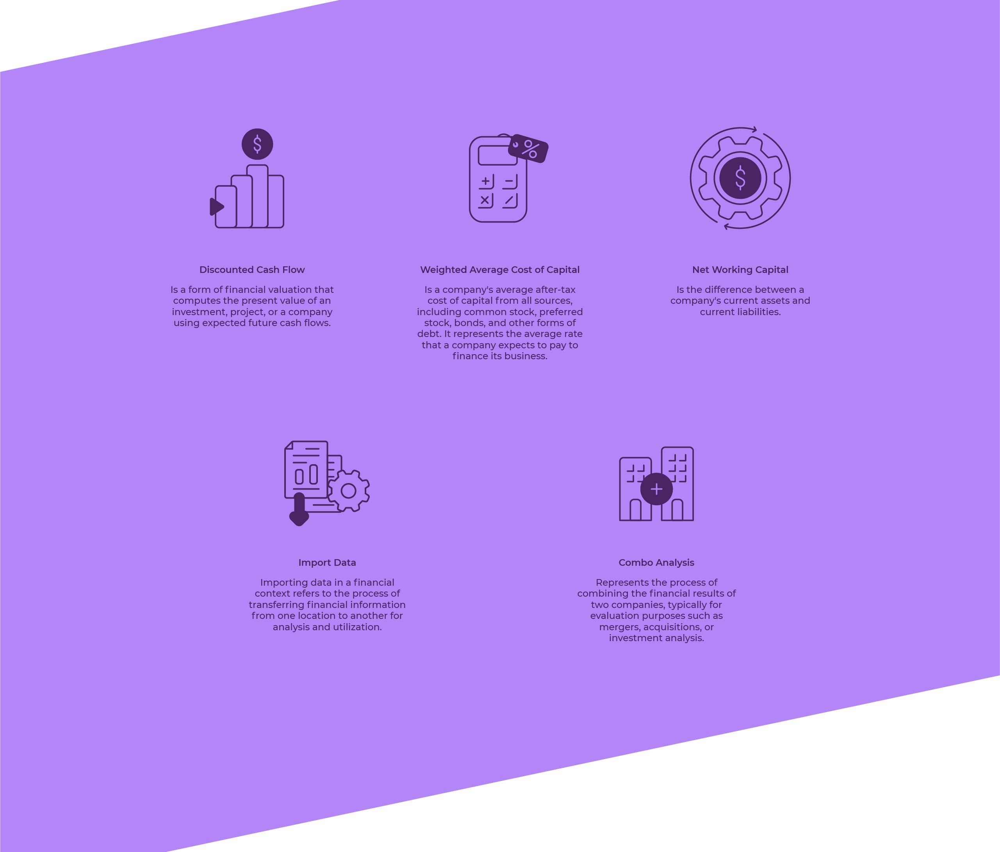

Nonighter
Quince íconos para la aplicación de escritorio de una plataforma de reportes financieros. Los que tenían habían quedado viejos e inconsistentes: confundían al usuario y ya no se parecían a la marca.

Reportes financieros
Con Lucía Domínguez · Al Sur Studio
Rediseño del set de la app
De 16 a 112 px
La app ya era el centro de trabajo de sus usuarios. Lo que se había quedado atrás era su capa visual.
Nonighter es una plataforma para ordenar procesos de reporte financiero: desde su aplicación de escritorio, el usuario genera informes todos los días. Los íconos que nombraban cada operación se habían vuelto viejos e inconsistentes entre sí, y eso genera dos costos: dudas al navegar y una marca que no se reconoce dentro de su propio producto.
El encargo fue el sistema entero, no una pieza: rediseñar los quince íconos con un mismo criterio. Lo trabajé con Lucía Domínguez.
Cuatro reglas acordadas antes de dibujar el primer ícono.
Actualizar el set al estándar visual que el usuario espera hoy de una app de escritorio.
Un mismo idioma gráfico en los quince, para que navegar sea más rápido y no haya que interpretar.
La paleta y el criterio de dibujo de Nonighter, dentro del producto y no sólo en la web.
Clarididad en cualquier tamaño de pantalla y resolución, del ícono de menú al de encabezado.

Dos tonos de relleno, un trazo de contorno y el violeta reservado para el elemento que da sentido a cada ícono: la moneda, el signo, el engranaje.

Todos los íconos se construyen sobre la misma grilla, con el mismo grosor de trazo y el mismo peso óptico. Es lo que hace que veinte juntos en una pantalla se lean como un conjunto.

Cada ícono probado en siete tamaños, de 16 a 112 px. El que manda es el tamaño real de uso en la interfaz, no el de la lámina de presentación.



Renovar un set en uso tiene una restricción que no se negocia: la lectura aprendida.
El ícono de un ERP no está para decorar: es la señal que el usuario ya memorizó y busca sin leer. Se puede cambiar todo el dibujo, pero no la metáfora. Trabajar sobre el set heredado, en vez de empezar de cero, fue la decisión que hizo posible modernizarlo sin costo de aprendizaje.
Desarrollo realizado junto a Lucía Domínguez — Al Sur Studio.